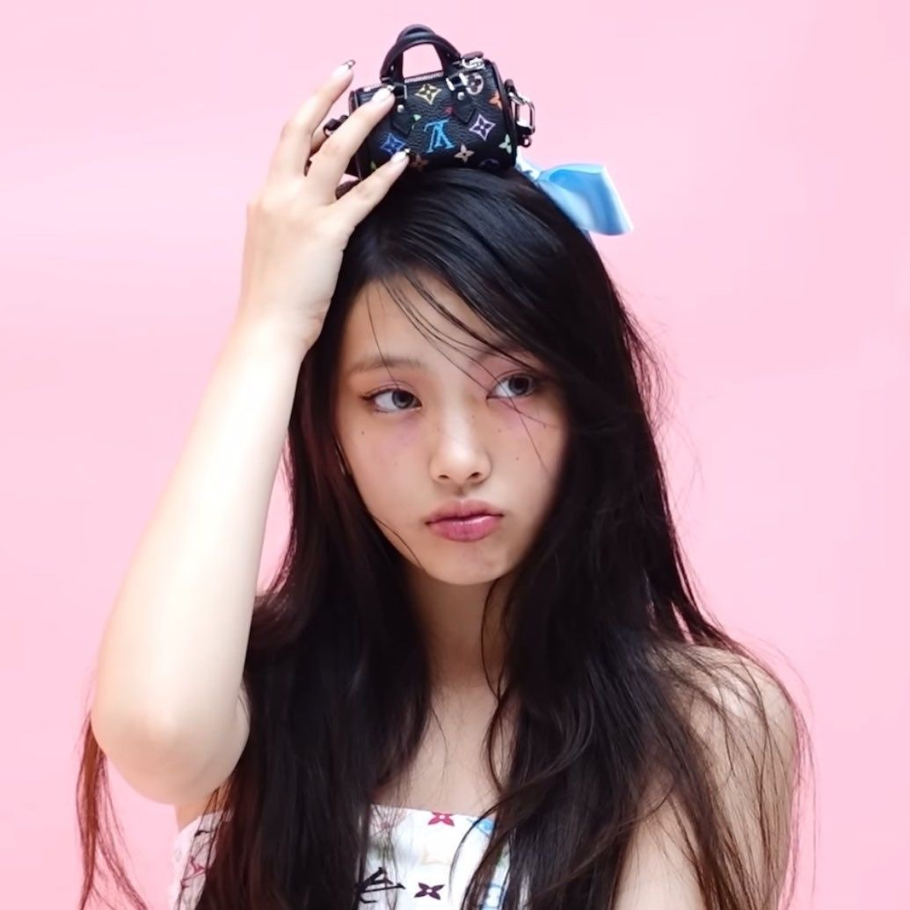
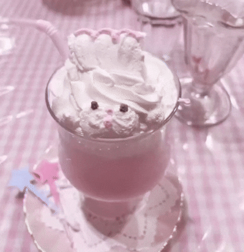
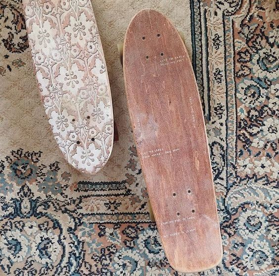
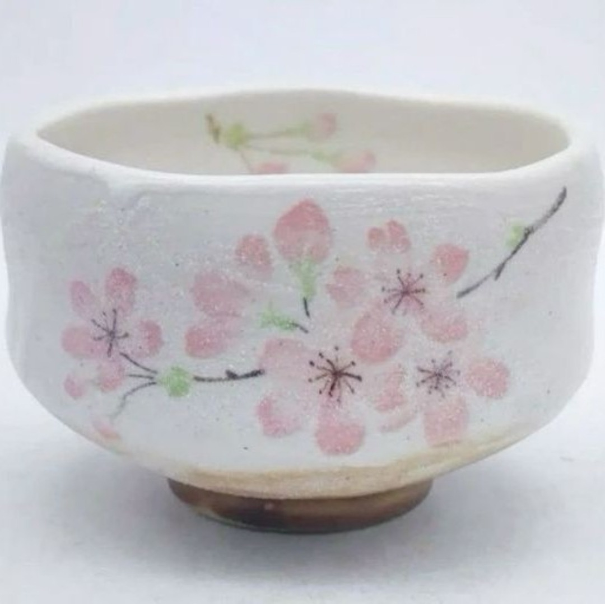

Hyein tornou-se estagiária da ADOR em 2021. A agência divulgou que ela foi transferida de sua escola internacional anterior para estudar em casa para terminar os estudos, afirmando que a escolha foi feita oficialmente por seus pais.
Hyein foi considerada a "membro mais experiente" da NewJeans, apesar de ser a mais jovem do grupo.
Em julho de 2017, Hyein foi anunciada como membro da primeira geração do grupo infantil U.SSO Girl (유쏘걸) sob o nome artístico de U.jeong (유정). O grupo estreou com o single "Go Go Sing" em 7 de novembro de 2017. Ela fez amizade com o membro do grupo U.Ha (유하), agora conhecido como Rora do BABYMONSTER. Hyein saiu do grupo em algum momento de 2018.
Hyein foi revelada como uma membro do grupo feminino da ADOR, NewJeans, em 22 de julho de 2022. No mesmo dia, o grupo estreou com a música Attention, primeiro single de seu EP de estreia New Jeans, lançado em 1 de agosto de 2022.
Em 10 de abril de 2024, ADOR anunciou por meio de uma carta digital que Hyein interromperia temporariamente todas as atividades devido a uma fratura no pé ocorrida durante o treino antes de seu retorno em 24 de maio de 2024..
Em 20 de junho de 2024, ADOR anunciou via Phoning que Hyein se apresentaria parcialmente no fanmeeting do TOKYO DOME de 26 a 27 de junho, após sua ausência nas promoções How Sweet. A agência também afirmou que a fratura de Hyein estava cicatrizando, de acordo com um exame recente da fratura, mas para evitar que ocorressem tensões em sua fratura, ela teria limitações ao se apresentar no palco com os outros membros. Também ficou implícito que Hyein não estaria presente durante o primeiro ciclo das promoções de Supernatural no Japão.